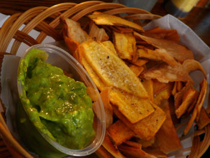
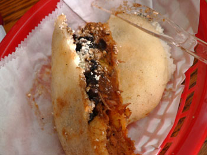

Caracas Arepas Bar
Mom and I had an excellent late lunch this afternoon at Caracas, an arepas place on East 7th Street just east of 1st Avenue.
The Times said that the place had recently expanded, which we could hardly believe as we sat at the miniscule bar in the postage-stamp room. Tonight, we learned that there is an adjacent room, because no way were there 34 seats in the room we ate in. The size of the room, however, did not detract whatsoever from our delight in the scrumptious food.
We only had two small plates, because it was late and we had dinner to think about.
First, the guasacaca:

I do not love guacamole as everyone else seems to, and I don’t know what makes this Venezuelan version different. But it was creamy and flavorful, and it disappeared with the help of salty, fried yuca chips.
Next, the first arepa either of have ever had:

I could happily eat two of these dense, crispy little nuggets of savoriness and call it a meal. Ours was stuffed with shredded beef, black beans, fried plantains, and salty cheese, and I can’t wait to eat another one.
For $12.95 with a drink, this lunch was a bargain.
Update 8/29
We just had dinner in the bigger half of Caracas. The food and atmosphere were good, and it’s BYOB! Unfortunately, the waitress sort of shooed us away from our table right after our food was cleared, and now I have a tummy ache.
Comments
Arepas are new to me. Of course, that’s one of the many great things about living in New York, you can eat the specialty of any nation, any day, and you are introduced to things like arepas.
Anyway, they sound delicious and your lunch seems like a great bargain to me also.
I’m glad we didn’t see the big room and sat at the tiny bar; it was fun watching the cooks work. Just amazing how four men could turn out such wonderful food in a space the size of the average closet!
Sorry about your tummy, but what did you eat for dinner?
It was an excellent treat and I loved it very much!!!! What are you eating tonight?
Add a comment